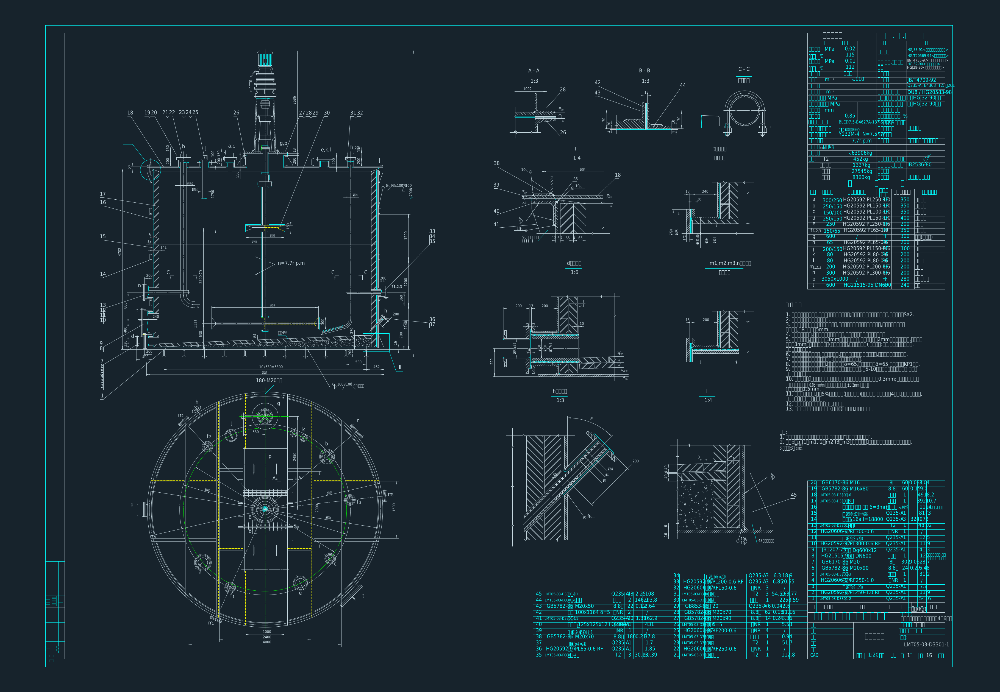

模型 · 量测与句柄 · 安装表 · 支承/空间复核 · 1.0保留版
水解槽 D41B02 · 2.0-D41B02-01
外部本体/接口、基础配合与安装复核；不展开内部工艺构造
已确认Tank_shell、Tank_flat_bottom、Tank_cover_lid及搅拌顶点/面/颜色保持；只替换/补外部接口
新图11个顶口按1:20几何换算平面，图形通径/衬套与名义DN分开
原盖面320高差与新总图口高基准未闭合；顶口暂从现有盖面5020表达，不宣称已核实绝对口高
原模型Ø5900及3076总高保留；新图钢壳Ø5924、盖面及2866分段需与已确认口径核对
侧口角度由图面分布作局部示意；m1/m2/m3和工艺绝对方位须现场/工艺图核实，不能据此施工
未标盖板厚、法兰厚和管外径系列为显示值；不得据此制造
各单台设备的工艺绝对方位待核；不凭文字插点新增位置
原始图纸、1.0、先前八类、建筑/桥架及原土建几何保持
